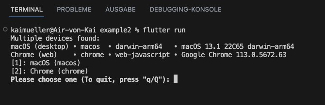
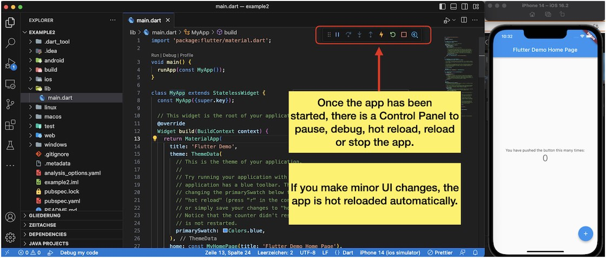
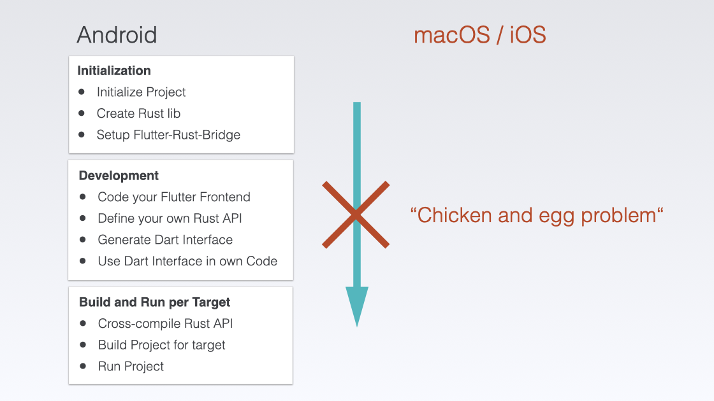
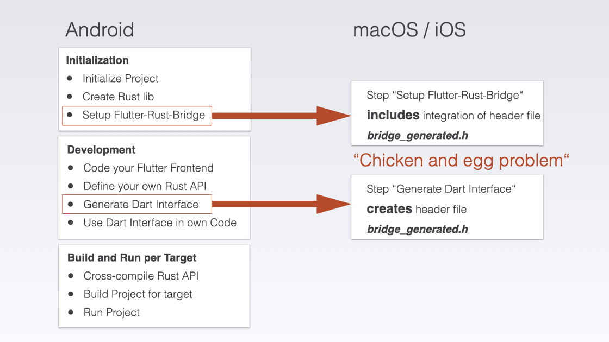
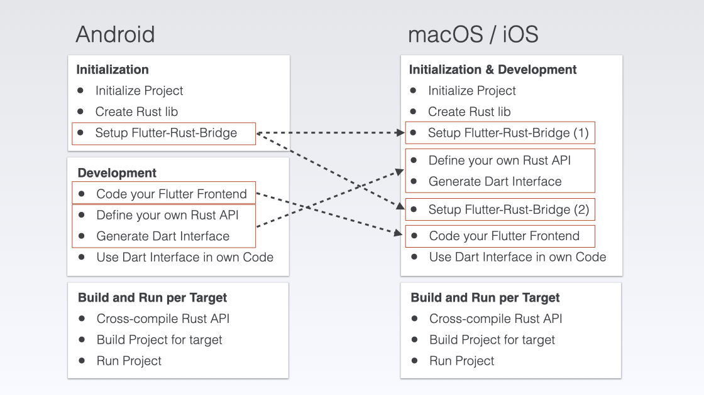
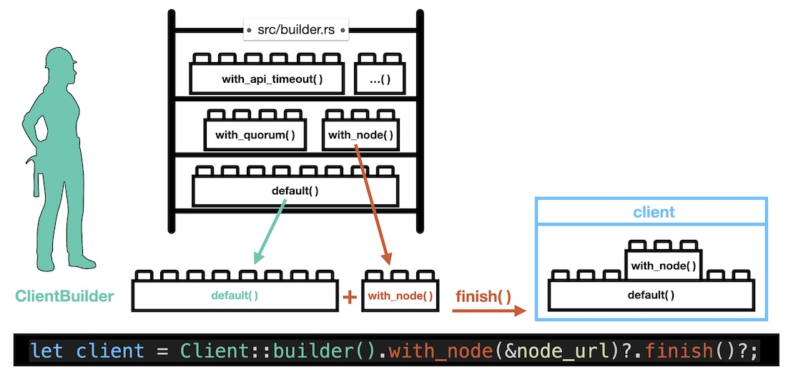

Ready to add some sparkle to your app development? Stay here, where we not only support the IOTA Mainnet but also the Shimmer Network! With this flexible approach, developers can easily choose whether to integrate the Chrysalis or the Stardust version into their projects (and let's be honest, who doesn't love a little shimmer in their code)? So why wait? Say hello to Flutter and Rust and join me on this exciting journey and let us make your apps shine!
In fact, the presented workflow supports both the Shimmer Network (protocol version "Stardust") and the IOTA Mainnet (protocol version "Chrysalis"). It depends on which library versions you as developer include in your project.
I assume developers are more interested in adopting the Stardust version, so I use the Shimmer (Testnet) and related libraries in my examples.
Originally I was searching for a workflow to build real-world products in the form of mobile and desktop applications backed by the Distributed Ledger Technology of IOTA. My goal was and is to facilitate the adoption of IOTA.
Just to clarify, every time I mention IOTA, I'm also referring to Shimmer.
I wanted to create a flexible solution that would allow developers to use a reduced technology stack for their projects. With IOTA for Flutter, I believe we've achieved that goal, and I'm excited to share it with the world. And believe me: Coming from Java and JavaScript frameworks I was not at all familiar with Flutter and Rust in the beginning.
I remember those days - the endless hours of debugging, the frustration of hitting the same roadblocks over and over again. But after four long months of trial and error, I finally found the solution with IOTA for Flutter.
This documentation is a condensed tutorial that summarizes everything I learned during that grueling proof-of-concept process. And now, I want to share that knowledge with you. Think of my tutorial as your personal guide to app development for IOTA - a way to save you time and headaches, so you can focus on what really matters.
Now, before you get too excited, I should warn you that app development is still app development, and there's always a chance that things might not work out the way you planned. Trust me, I've been there. But hey, that's half the fun, right? The thrill of the chase, the excitement of finally figuring out that pesky bug - it's all part of the process. Just don't blame me if you find yourself cursing my name at three in the morning when something doesn't work quite right. But hey, if it was easy, everyone would be doing it, right? So let's roll up our sleeves and get to work!
IOTA for Flutter is a sponsored project by the Tangle Community Treasury. The funding allows me to organize my collected notes and prepare them for you. At this point, a big thank you to everyone involved!
By exploring IOTA, a Distributed Ledger Technology (DLT), you can expand your knowledge and explore the exciting possibilities of new use cases beyond the limitations of Web 2.0. This technology has the potential to revolutionize various industries, such as supply chain management, smart city infrastructure, and digital identity verification.
IOTA is unique in that it is a permissionless, decentralized system designed to enable secure and feeless exchange of value and data transfer between connected actors. Unlike traditional blockchain-based systems, IOTA does not rely on miners to validate transactions. Instead, each transaction verifies two previous transactions, creating a web-like network of transactions called the Tangle. This makes IOTA's DLT highly scalable and able to handle large amounts of transactions with zero fees.
Of course, it's a good idea to take a look at the official websites for IOTA and Shimmer (which is the staging network of IOTA), see below. There, you'll find plenty of resources and information to help you get up some more information about it and what it is used for.
If you're a Flutter developer who's not familiar with IOTA or Shimmer, don't worry!
There's no substitute for hands-on experience, and that's where IOTA for Flutter comes in. While the official websites for IOTA and Shimmer provide a great starting point, the best way to truly understand how to use these technologies in your Flutter projects is to give it a try yourself.
IOTA for Flutter provides a tutorial-style documentation that walks you through the process of integrating IOTA and Shimmer step-by-step. So don't be afraid to jump in and give it a shot! Who knows, you might just surprise yourself with what you can accomplish.
This tutorial is about building User Interfaces for human interaction (highlighted in red)
The focus of this project is to provide a user interface or interaction capability with IOTA for humans. While IOT devices, machines or smart contracts can also interact with IOTA, the primary goal here is to create a seamless experience for people to connect and engage with IOTA's Layer 1 network.
The main goal is achieved by building mobile and desktop apps. The focus is on the target platforms that Flutter supports, with the caveat that the proof-of-concept has only been tested on iOS, Android, and macOS.
Rust plays a crucial role in IOTA for Flutter, too. All of IOTA's libraries are written in Rust and are referred to as the Single Source of Truth. I will explain how these Rust libraries are used as a dependency in a custom library which is cross-compiled and integrated into Flutter.
The IOTA for Flutter tutorial is divided into several sections, including a fundamentals section for preparing what you need, an overview for getting the key concept, and several practical chapters that focus on building real-world products.
To make it easier to follow along with the written text, each practical chapter has a corresponding repository on GitHub. I also provide some videos to demonstrate the resulting app, the workflow and guide users through important steps, so you can watch over my shoulder as I work through the examples.
The Three Pillars of the Tutorial: Github Page, Repositories and Videos
The practical chapters are structured as follows: first, we start with an introductory chapter to build an app with Flutter and Rust without IOTA. This will introduce the Flutter-Rust-Bridge, the glueing part that brings Flutter and Rust together. Then, we dive into building a simple IOTA-powered app, followed by a comprehensive "Shimmer playground" app to demonstrate all Rust libraries in one app.
As a bonus, I provide the code for the MQTT Chat App. In this chapter, I assume that you have gained enough knowledge and experience from the previous practical chapters.
Hold on to your keyboards because it's time for a chapter that will be more exciting than a cat chasing a laser pointer. We're about to explore how familiar Flutter looks when you compare it to JavaScript frameworks and what other reasons there are top use it - and let me tell you, it's going to be so much fun you might want to put on a party hat.
Well, I know some of you might be thinking, “Wait a minute, I'm a JavaScript developer, why should I care about Flutter?” Well, let me ask you, have you ever heard the phrase “Diversity is the spice of life " heard? Yes, that also applies here. By expanding your skills and learning more about Flutter, you might discover a whole new world of possibilities and solutions to your coding challenges.
So get ready to rock and roll, code warriors, because it's time to expand your programming horizons and discover why Flutter should play a part in your life.
When I first started learning Flutter, I had zero prior knowledge. To give myself a boost of motivation, I turned to videos to get a better understanding of what Flutter is all about. Watching videos not only helped me to get started with Flutter, but also gave me the confidence to continue learning and building my own apps.
Flutter is like a treasure trove of creative possibilities, just waiting for you to unlock its secrets. With Flutter, you can build stunning user interfaces, craft intricate animations and interactions, and even dip your toes into the wild and wacky world of game development. You'll discover lots of sources of inspiration that will leave you buzzing with excitement.
Later on, you will realize how interacting with Rust libraries empowers you to develop potent products - precisely what you are aiming for.
In Flutter, a component is a self-contained, reusable piece of a user interface. It is a widget that can be used in a Flutter app to create a specific visual and/or interactive element, such as a button, text field, or image. A component in Flutter can be composed of other components, making it possible to create complex UIs by assembling smaller, reusable parts.
Doesn't that sound familiar to you!?
Let's compare a single Flutter widget with a Vue.js component. In Flutter you write the whole component as Dart code:
Flutter's approach of writing everything as code provides a more streamlined and cohesive development experience compared to the traditional separation of HTML, CSS, and JS. With Flutter, you can create custom user interfaces and animations with greater ease and control, and the resulting apps are faster and smaller. Plus, no more switching between different languages and files like a mad scientist!
A very important difference to JavaScript Frameworks is: Flutter compiles the Dart code to native machine code. Theoretically you have the control over every pixel on the screen. BTW, this also differs from React Native where written code is compiled only to the native UI components.
Just a few examples to show you'll feel familiar - but you'll also have to learn new rules
Below, you'll find a completely incomplete list ü§™, but it is intended to show that there are many similarities between Dart and JavaScript, making it easier to switch between the two languages or even learn both simultaneously. There are other rules too, but you can easily learn them.
Some more comprehensive information you can find in the official docs. Here are two links:
Like in JavaScript, in Dart var is short for variable. It is used to declare a variable whose type is statically inferred:
var mystr = "shimmer";
In the example above, we declare a variable of type String. One of the convenient features of Dart is that it's able to infer the type of a variable based on the value that's assigned to it. Here, it's quite evident that it's a String type.
But unlike JavaScript, you CANNOT change the type of the variable afterwards!
var mystr = "shimmer";
mystr = 10; // THIS ASSIGNMENT DOESN'T WORK!
When we attempt to change the type of a variable in Dart, the compiler will generate an error. This is because Dart is a statically typed language, which means that the data type of a variable is determined at compile-time and cannot be changed during runtime.
Another way to declare variables is the explicit type declaration:
String mystr = "shimmer";
In Dart, it's generally considered good practice to explicitly declare the data type of a property when defining a class. This helps to ensure that the code is more easily understood and maintainable, especially when working on larger projects with multiple developers.
For variables within smaller scopes, such as a method, the "var" keyword can be used instead of explicitly declaring the data type. This is because the scope is smaller and it's often easier to infer the type of the variable based on the context of the code.
class MyCat {
String cat = "Bob";
void someMethod() {
var anotherVariable = "Tom";
}
}
class Person {
constructor() {
this.name = "";
this.age = 0;
}
greet() {
console.log(
`Hello, my name is ${this.name} and I'm ${this.age} years old.`
);
}
}
var person = new Person();
person.name = "Joe";
person.age = 44;
person.greet();
class Person {
String name;
int age;
void greet() {
print("Hello, my name is $name and I'm $age years old.");
}
}
var person = Person();
person.name = "Joe";
person.age = 44;
person.greet();
var fruit = "apple";
switch (fruit) {
case "banana":
console.log("This is a banana");
break;
case "apple":
console.log("This is an apple");
break;
default:
console.log("This is not a fruit");
}
var fruit = "apple";
switch (fruit) {
case "banana":
print("This is a banana");
break;
case "apple":
print("This is an apple");
break;
default:
print("This is not a fruit");
}
XCode, Android Studio, the SDKs and Virtual Devices, all that stuff needs GBs on your disc. Welcome to app development! Additionally it turns out that the cross-compiling process to build the libraries takes an enormous amount of disk space PER target, too.
As you continue to use Xcode, the available storage on your hard drive gradually decreases. This is because numerous files are generated automatically during project builds, with a significant amount of them being stored in the Derived Data folder. This folder alone can occupy anywhere from a few hundred MB to several GB of space.
Disc space used by derived data
Fortunately, you can easily remove files from this folder without any adverse effects. By doing so, you can recover valuable space on your Mac, making it more efficient to work with Xcode.
If you build more apps and cross-compile more targets, the disk space usage increases. However, you can safely remove these subfolders. The only difference it makes is in terms of time - the first build will take longer if the target folder has been deleted.
Disc space used by build targets of example app "Playground"
Although you can develop code for all platforms on a single machine, you can only execute and test iOS and macOS applications on macOS devices, Windows applications on Windows devices, and Linux applications on Linux devices.
You need to be patient, you may experience some hair-pulling moments when things grind to a halt, but when it finally all comes together, it's like hitting a bullseye on a dartboard - satisfying as heck!
Chapter by chapter I will explain you the steps to connect Flutter and Rust to IOTA. I therefore recommend that you also read section by section and follow the steps.
Second, I advise you to set up a project from scratch. I know it can be tempting to just download the code from the repository and run it, but there's a good chance you'll run into problems.
Due to the different versions of Rust and Flutter you may have, it's safest to follow the step-by-step instructions and selectively include specific files in your own project.
Another reason is that not only will you learn more about the intricacies of setup, but you'll also be better equipped to troubleshoot any problems that arise.
I want you to be successful and not frustrated.
Finally, when you include the code snippets, feel free to try refactoring them if you don't like the coding style. Keep in mind that I'm not producing the cleanest, best code, I just want to get things working. Everything else is nice to have.
Welcome to the section where we clear up any misunderstandings before you dive in! Think of it as the disclaimer before the main event, like when they tell you not to try the stunts you see in action movies at home.
So, what can you expect from this tutorial? We'll cover how to connect Flutter and Rust to IOTA, but let's make it crystal clear what's not on the menu.
First, we won't go into detailed explanations of IOTA - we'll leave the philosophical musings to the experts.
Also, this tutorial assumes you've already got Xcode, Android Studio, Flutter, and Rust up and running, so we won't bore you with deep installation instructions. Yes, there are sections called "Set up", but please understand that I can't deeply dive in but only can give you the right links and useful hints.
And sorry, no teaching of Dart or Rust - I'll assume that it's on your bucket list and you know what you're doing!
Finally, I won't be exploring the proof-of-concept for Linux, Windows, browsers, or browser extensions - this ain't no Cirque du Soleil show. I am using a Mac and so my personal means are limited.
And don't expect any deployment or production readiness insights - we'll let you handle the red carpet rollout yourself.
We primarily use Android Studio for managing SDKs and virtual devices, building and running apps, as well as for deployment purposes. However, when it comes to actual coding, we'll be using VS Code as our preferred editor.
So - in the context of Flutter - Android Studio is required for its tools used by Flutter under the hood.
After downloading (several GBs...), install Android Studio:
On Mac, drag Android Studio into the Applications folder.
On PC, execute the installer and follow the wizard. Make sure to install also the "Android Virtual Device".
Avoid Special Characters in your installation path!
Starting Android Studio the first time, a configuration wizard will start. Use "Custom" option, in order to check "Android SDK", an Android SDK Platform like "API 33: Android 13.0 (Tiramisu)" and, if selectable, "Android Virtual Device".
Go on to the next chapter, to get some essentials about the requirements for the development with Flutter and the Flutter Rust Bridge.
The SDK Manager is used for managing the software development kit (SDK) components of the Android platform. Its primary purpose is to facilitate the installation, removal, and updating of various SDK packages required for developing Android applications. It allows also to manage and update various SDK Tools that are part of the Android development toolkit, such as the Android SDK Build Tools, the Native Development Kit (NDK), and more.
Start Android Studio. You can open the SDK Manager in one of the following ways:
via the "Welcome to Android Studio" Page:
If this page is open, there is dropdown menu "More Actions". Open it and select "SDK Manager".
via the "Tools" Menu:
If Android Studio is open, open the "Tools" menu. You will find the item "SDK Manager".
via the "Settings":
Open the "Settings..." in the "Android Studio" menu.
In the window, select the "Appearance & Behavior" -> "System Settings" -> "Android SDK" section.
Hint: The Android SDK Location can be found here, too.
The Virtual Device Manager is a tool used for managing and creating virtual devices, also known as emulators. Emulators are software-based virtual devices that simulate the hardware and software configurations of real Android devices, allowing developers to test and run their applications without needing physical devices.
If you don't have a Virtual Device yet, click on "Create Device".
Choose a phone, e.g. the "Pixel 6" or "Pixel 3a"
As system image, choose the one corresponding to the installed Android SDK platform!
Keep the ABI in mind, here "arm64-v8a". The ABI information is used to configure the build.gradle file later, in the context of the Flutter-Rust-Bridge configuration.
For better performance, choose "Hardware - GLES 2.0" for Graphics.
Open the Virtual Device Manager and start your Virtual Device by clicking on the Play button. You'll notice that there is section called "Device File Explorer".
Later on, you can refer to the following location to retrieve information regarding stored files (RockDB, Stronghold Snapshot file) in your application's filesystem.
Path to AVD's filesystem: Root -> data -> data -> {app.id}
AVD filesystem
For your information, the location of the cross-compiled Rust library can be found here:
Root -> data -> app -> {temporary folder - use date to find the correct one} -> {app.id} -> lib
Location of the cross-compiled Rust library librust.so
Similar to the usage of Android Studio, we use Xcode for managing virtual devices, building and running apps, as well as for deployment purposes. However, when it comes to actual coding, we'll be using VS Code as our preferred editor.
So - in the context of Flutter - Xcode is required for its tools used by Flutter under the hood.
Important note
During the work with certain IOTA libraries and the Flutter Rust Bridge, it was sometimes necessary to launch the app directly from Xcode. In certain situations, it deviated from the usual procedure of starting the app with "flutter run" and instead required a workaround through Xcode.
Xcode: Where Complexity Unfolds, Humor Helps Break the Mold.
At first glance, Xcode resembles an airplane cockpit: Overwhelming and seemingly impossible to navigate. But here's the thing: You don't need to fiddle with most of the settings.
Flutter has taken care of generating the Xcode project for you. As for the second Xcode project for the Rust library (mentioned below), that's created by cargo-xcode.
So, don't worry! All you need to do is grasp a few essential concepts and locate some helpful resources to find your way around. And hey, who knows, maybe you'll even learn to enjoy the Xcode experience, despite its initial complexity!
A Xcode project follows a specific structure that organizes the various files and resources used to build an macOS or iOS application.
Project File: A project file with the extension .xcodeproj or .xcworkspace serves as the entry point for the Xcode project. It contains information about the project settings, build configurations, and references to all the project files.
The .xcodeproj file is the traditional project file used in Xcode. It represents a single Xcode project and is used for organizing and building a single target, such as an iOS app, extension, or framework. It contains project settings, build configurations, and references to all the project files specific to that target.
The .xcworkspace file, on the other hand, is used when you have multiple Xcode projects or multiple targets that depend on each other. It is a workspace file that can include one or more .xcodeproj files and their associated targets. The .xcworkspace file acts as a container that allows you to work on and build multiple projects or targets together in a unified workspace.
Targets: An Xcode project can have one or more targets. Each target represents a distinct product, such as the main app, extensions, or test suites. Targets contain the necessary build settings, dependencies, and references to source files.
Source Code: The source code files are organized within groups or folders. The default group is typically named after the project and contains the main application's source code files. Additional groups can be created to organize code files into logical categories or features.
Frameworks and Libraries: Xcode projects often use external frameworks and libraries to extend functionality or reuse code. These dependencies are managed within the project and are listed in the "Frameworks and Libraries" section. They can be system frameworks, third-party libraries, or custom frameworks.
In the Flutter/Rust context, the Rust Code is a separate Xcode Project which is included as "subproject" into the main project. This Xcode Project is created by the tool cargo-xcode.
Configuration Files: Configuration files, such as Info.plist, contain essential metadata about the application, including its bundle identifier, version, required device capabilities, and permissions.
Build Settings: Xcode provides an interface to configure build settings for the project and individual targets. These settings control compiler flags, optimization settings, code signing, deployment targets, and various other project-specific configurations.
The interaction of this structure, composed of multiple Xcode projects, becomes more apparent when we build applications for macOS resp. iOS in the practical chapters.
At this stage, it's worth mentioning that there exists a dedicated Rust Xcode project rust.xcodeproj. This project is created during an initialization step of the Flutter Rust Bridge for macOS or iOS. It includes a script ("Build Rule") that serves the purpose of generating a static or dynamic library and integrating it into the build process of the main Xcode project Runner.xcodeproj for the app.
Static and dynamic libraries are both forms of code libraries, but they differ in how they are linked and loaded into an application.
Static Libraries:
A static library, also known as a static link library, is a compiled set of object code that is linked directly into an executable at the time of compilation. The library code becomes part of the final executable binary.
When an application is built with a static library, all the library code is copied into the resulting binary. This means that the application becomes self-contained and doesn't rely on the presence of the library during runtime.
Static libraries are typically denoted by file extensions like .a (on macOS and iOS) or .lib (on Windows). They provide a way to distribute pre-compiled code that can be linked with multiple applications without needing to distribute the library separately.
Dynamic Libraries:
A dynamic library, also called a shared library or dynamic link library (DLL), is a separate binary file containing compiled code that can be loaded and linked by multiple applications at runtime.
Unlike static libraries, dynamic libraries are not copied into the application binary. Instead, the application references the dynamic library and loads it dynamically during runtime.
Dynamic libraries offer advantages such as code sharing among multiple applications and the ability to update the library independently without recompiling the applications that depend on it.
Dynamic libraries are usually denoted by file extensions like .dylib (on macOS and iOS) or .dll (on Windows).
Click on the leftmost symbol in the left pane. This will activate the Project Navigator. It can be used to configure project settings or adjust the project structure, such as adding libraries or other Xcode projects (by dragging them into the workspace).
Flutter, developed by Google, aims to provide developers with a unified codebase to build cross-platform applications that can be deployed on various targets. Originally designed to support mobile devices, Flutter has expanded its reach to include desktop platforms such as macOS, Windows, and Linux, as well as browser applications.
At its core, Flutter consists of two main components: the UI Framework and a Collection of Tools. The UI Framework encompasses a rich set of code packages that empower developers to create visually appealing user interfaces. The collection of tools, on the other hand, enables the transformation of a single codebase into machine code capable of running on diverse platforms.
Flutter uses Dart as programming language. It's important to note that while you can write Dart code for all platforms using Flutter, there are specific requirements for building and testing applications on different targets. Building apps for iOS/macOS necessitates a macOS computer with XCode installed, while building and running Windows apps requires a Windows machine, and the same goes for Linux. However, developing Android and browser apps can be done on any host machine, as Android Studio is compatible with multiple operating systems.
Avoid Special Characters and Blanks in your installation path!
When installing Flutter, it's important to note the differences between Mac and Windows systems. One of the system requirements is having Git installed, as Flutter utilizes it for installation and updates. On Windows, Git needs to be installed separately. However, on Mac, Git is conveniently included in Xcode. For a smooth installation experience, it is recommended to install Xcode before Flutter on Mac systems.
Mac Users
Even if you already have Xcode installed, go through the installation guide and check each step! For example, don't forget to add the Xcode Command-line tools.
Side notes
To find out which shell you are using: echo $SHELL
To toggle hidden directories and files: command + shift + .
If you're more inclined to watch an installation video, I've got a fantastic recommendation for you: I highly recommend checking out the tutorials by Maximilian Schwarzmüller from Academind.
Now, let me make one thing clear — I'm not affiliated with Academind, and they definitely haven't slipped me any advertising cash (unfortunately). But I genuinely appreciate Max's work and the crystal-clear instructions he provides.
So, I wholeheartedly encourage you to check out his tutorial about Flutter & Dart ("The complete guide [2023 Edition]") and see for yourself. Don't just take my word for it, folks! Discover the wonders of Flutter installation with Max's delightful guidance. There are several free videos: amongst others you'll find a guide about the macOS Setup and one about the Windows Setup!
A typical Flutter project follows a specific structure that organizes the various components and resources of the application. Here is a description of the common project structure in a Flutter project:
android: This directory contains the Android-specific files and configurations for the Flutter project. It includes the Android manifest file, Gradle build scripts, and other resources specific to the Android platform.
ios: This directory holds the iOS-specific files and configurations. It includes the Xcode project, property list files, and other resources specific to iOS development.
lib: The lib directory is where the main Dart code for the Flutter application resides. It contains the main.dart file, which serves as the entry point for the application. Additionally, you can organize your code into multiple files or directories within the lib directory to improve code modularity and maintainability.
macos: This directory holds the macOS-specific files and configurations. It includes the Xcode project, property list files, and other resources specific to macOS development.
test: The test directory is used for writing unit tests and integration tests for your Flutter application. It typically contains test files and directories to organize your test code.
assets: The assets directory is where you can store static files such as images, fonts, and other resources required by your application. These files can be accessed using Flutter's asset management system.
pubspec.yaml: The pubspec.yaml file is a YAML-formatted configuration file that defines the project's metadata, dependencies, and assets. It specifies the required packages, version constraints, and additional resources like fonts or images.
Packages ("Plugins") refer to pre-built libraries or modules that developers can use to add specific functionalities or features to their Flutter applications. They are created by the Flutter community, as well as by the official Flutter team at Google, and they help streamline the development process by providing ready-to-use code solutions for common tasks.
In my "MQTT Chat App" project, I utilized the "Flutter Chat UI" package to swiftly integrate a chat user interface and interactive functionality with just a single installation instruction!
The Package Manager is used to manage dependencies, define project metadata, configure project-specific settings and facilitate the development workflow.
Flutter / Dart
Rust
JavaScript / Node.js
Package Manager
Pub
Cargo
npm
Configuration File
pubspec.yaml
Cargo.toml
package.json
Package Repository
https://pub.dev
https://crates.io
https://npmjs.org
To add a package/plugin use the command:
flutter pub add <package>
Once the package is installed, you'll find a list entry in the pubspec.yaml file, as dependency.
Don't use special characters or blanks (use "_" instead) as project name and in your absolute project path!
Don't name your project like an existing public package! It could lead to circular dependencies. See the Logging Example App -> Resources section as example.
To create an "empty" app use the command:
flutter create --empty <project_name>
To create Flutter's "default" app use the command:
When installing Rust, the recommended approach is to use rustup, a versatile tool that serves as both an installer and version manager for Rust.
With rustup, you gain access to a comprehensive toolset that enhances your Rust development experience. It includes rustc, the rust compiler responsible for translating your Rust code into executable binaries or libraries.
Cargo, another essential component, is the Rust package manager. It also simplifies dependency management, project building, testing, and more, serving as a valuable asset in your Rust workflow.
rustup also offers rustfmt and clippy. rustfmt is a source code formatter that ensures consistent and elegant formatting in your Rust codebase. On the other hand, clippy is a Rust linter that helps identify potential issues and provides helpful suggestions to improve your code.
So, everything starts with installing rustup.
On macOS, Linux, or another Unix-like OS, to download rustup and install Rust, run the following in your terminal, then follow the on-screen instructions.
curl --proto '=https' --tlsv1.2 -sSf https://sh.rustup.rs | sh
Rust updates very frequently. If you have installed Rustup some time ago, chances are your Rust version is out of date. Get the latest version of Rust by running:
In the course of our Flutter-Rust project, when creating a Rust library with an API, we generate a Rust Package. For larger projects like the IOTA Libraries, the source code can be further organized using another Rust feature called Workspace. The complete organizational structure is explained in more detail in the next chapter titled Project Structure.
A Rust Library Project includes the following elements:
src: This directory serves as the main location for the library's source code.
lib.rs: The lib.rs file acts as the entry point. It acts as a central module where you can declare and organize the public items (functions, structs, enums, traits, etc.) that are intended to be accessible to other crates (projects) that depend on the library. These items are marked with the pub visibility keyword to make them visible outside of the library's crate.
Additional source code files and subdirectories can be organized within the src directory to maintain a modular and organized codebase.
In the context of Flutter, Rust and the Flutter Rust Bridge, we organize the structure in the following way: The public functions and structs that are intended to be exposed in the API are code in the file api.rs. This file is then integrated as module into the lib.rs file.
target: This directory serves as the build location for the library. It will be automatically created once the cargo build command is used. In this directory, your storage space vanishes into thin air like a magical bunny in a hat! You can remove it whenever you like - but: Deleting comes at the expense of time. During the first build, all necessary resources are loaded, which takes time. If the directory exists, all subsequent builds are faster.
Cargo.toml: The Cargo.toml file acts as the manifest for the library project, defining metadata such as the package name, version, dependencies, and build configurations.
Cargo.lock: This file is an automatically generated file. When you build a Rust project using Cargo, it resolves the dependencies specified in the Cargo.toml manifest file and generates the Cargo.lock file. This file includes the specific versions of each dependency and their transitive dependencies that were resolved during the build process.
A Crate acts as a unit of code organization and encapsulation, providing a way to manage and share code functionality.
Crates can also have dependencies on other crates, allowing them to utilize external code and libraries. The dependencies are declared in the Cargo.toml file of the crate, under the [dependencies] section.
In our context, the wallet.rs library (crate name: "iota-wallet") library includes the iota.rs library (crate name: "iota-client"), amongst others.
The Package Manager is used to manage dependencies, define project metadata, configure project-specific settings and facilitate the development workflow.
Flutter / Dart
Rust
JavaScript / Node.js
Package Manager
Pub
Cargo
npm
Configuration File
pubspec.yaml
Cargo.toml
package.json
Package Repository
https://pub.dev
https://crates.io
https://npmjs.org
To add a package/crate use the command:
cargo add <crate_name>
I use the alternative way to include a crate:
Simply add it directly to the [dependencies] section of the Cargo.toml manifest file.
Rustup is a version manager that allows you to easily install, manage, and switch between different toolchains.
A toolchain refers to a specific version of the Rust compiler and associated tools that are used to compile, build, and manage projects. It includes the Rust compiler itself, the standard library, and other essential components required for Rust development.
Having multiple toolchains allows developers to work with different Rust language features, test compatibility across versions, and ensure their code works as intended in different Rust environments.
The Terminal command
rustup show
provides an overview of the Rust installation details, such as the installed toolchains, the currently active toolchain, and the associated components like cross-compiling targets.
Important: Before you create the new project ensure that you are in the correct folder. To create the Rust Library Project for IOTA for Flutter, the Flutter Project must exist, and your Terminal prompt needs to be in the root directory of the Flutter Project.
To create the Rust Library Project, execute the command:
cargo new --lib <crate_name>
I always use the crate name rust. In that case, a new subfolder rust is created.
A Workspace is a feature provided by Cargo (Rust's package manager and build tool) that allows you to manage multiple related Packages within a single directory. Workspaces are optional.
By organizing packages as part of a workspace, you can share dependencies, coordinate builds, and simplify the development and testing of interconnected projects.
Workspace and packages each have their own Cargo.toml file.
A Crate is a self-contained unit of code that encapsulates a set of functionality, typically organized into modules, structs, enums, traits, and functions. This unit of code can be shared, imported, and used in other codebases.
Crates can be published to the Rust community's Crate Registry, allowing developers to include them as dependencies in their projects:
Hint: Search for the keyword iota in the
registry to get a list of IOTA related crates.
There are two types of crates: library crates expose public functions or items , and binary crates which are executable programs. A package can contain the source code of one or several crates.
A Module is a way to organize and group related code within a crate. It allows for logical separation and encapsulation of functionality, helping to keep code organized and maintainable.
There is a distinction between declaring and defining a module.
Declaring a module: Declaring a module is the process of creating a module and specifying its name and structure. It is done using the mod keyword, followed by the module name and a block of code that defines the contents of the module. When you declare a module, you are essentially creating a namespace and organizing code within that namespace. You can declare modules in the same file or in separate files, and you can nest modules within other modules.
Defining a module: Defining a module involves implementing the functionality and providing the actual code within the declared module. It includes writing functions, structs, traits, and other items that make up the module's implementation. When you define a module, you are filling it with the necessary code and logic to perform specific tasks or provide certain functionality.
Here's an example to illustrate the difference:
// Declaration of a module named "department" (here: inline within a file)
pub mod department {
// Definition of a struct within the module
pub struct Employee {
// struct fields
}
// Definition of a function within the module
pub fn list_employees() {
// function implementation
}
}
// Usage
fn main() {
// Accessing the defined module and its items
let employee = department::Employee {};
department::list_employees();
}
A Path refers to the location of a module or item (e.g. structs, enums, functions) within the project's directory structure. It represents the hierarchical structure of directories and subdirectories.
The use keyword in Rust is used to bring items from a module or crate into scope, allowing them to be accessed without fully qualifying their paths. It provides a way to conveniently reference items by their short names instead of using their full paths every time.
The requirement, however, is that the used modules and items are public (indicated by the keyword pub).
Paths
In Rust, paths and namespaces are interrelated concepts that help organize and reference code elements. For example:
// Declaration of the modules (here: inline within a file)
mod company {
pub mod department {
pub fn list_employees() {
// Function implementation
}
}
}
// Usage
fn main() {
company::department::list_employees();
}
In Rust, the implementation of structs can be split into different files to improve code organization and maintainability. This allows you to separate different aspects of the struct's implementation, such as methods, associated functions, and trait implementations, into separate files.
However, it's important to note that a struct itself can only be defined in a single file. This ensures that the struct has a single, unambiguous definition within your project.
Documentation in Rust: Can be helpful, but ... crate docs can also be quite incomplete.
Another way to familiarize yourself with a library is to look at the documentation. With Rust, we can instantly create documentation based on the comments in the source code.
By default, the rustdoc engine evaluates only the enabled features. To create the documentation that covers the whole code, use the option --all-features.
To include non-public items, use the --document-private-items flag.
All options are displayed by executing cargo doc --help.
When you run the command, rustdoc will scan all files and create a working folder debug/ and an output folder doc/ inside the target directory. Depending on the number of scanned crates this might take a while.
Before running the above cargo doc ... command change to the client/ directory.
Sometimes you are facing unresolved links
When executing the command, I encountered a handful of error messages due to unresolved links. In rustdoc, links are indicated by square brackets [...]. Fortunately, fixing these issues is a breeze: simply remove the square brackets i.e. the link, and the problematic areas will be swiftly resolved.
Imagine that you have created your Rust API in the directory rust/ within your Flutter project, added the necessary dependencies, and your code appears to be error-free.
With a hopeful spirit, you press the play button. The code starts compiling. It compiles and compiles, and then it happens: a red error message halts your enthusiasm.
It's possible that you have included a dependency whose version is not compatible with the target platform - such as the iota-wallet. What works on iOS may not necessarily function on Android, and vice versa. While we aim to cross-compile Rust code, there are a few cases where it doesn't go smoothly.
To find a solution to the problem, you need to first determine:
Which library is causing the error?
Which version of the library is being used?
What is the dependency hierarchy that has been established?
By understanding these aspects, you can begin troubleshooting and seeking a resolution for the issue at hand.
Dependencies are managed using the Cargo.toml file. This file serves as a manifest for the project, where you declare the dependencies required for your code to compile and run. Dependencies are specified under the [dependencies] section, where you can list the name and version of each dependency. Cargo uses this information to fetch and manage the dependencies automatically.
Several options provide flexibility in managing dependencies. Version-based specifications ensure compatibility with specific versions, while Git-based specifications allow fetching libraries directly from Git repositories, enabling experimentation with different branches, revisions, or even forks of a library.
In this example, the project fetches the "library-name" crate from the specified Git repository, using the "develop" branch.
Warning
When employing this form of dependency specification, the latest commit from the specified branch will be fetched each time changes are made to Cargo.toml. It is essential to be aware that by relying on this method, there is a possibility that library developers may introduce unintended modifications to the library.
Developers can also specify a specific commit hash (revision):
Go back in history by clicking the "Older" button at the bottom of the page.
Continue navigating through the commits until you find the commit titled "Bring back rocksdb 0.19".
Copy the full SHA (hash) of the commit that is immediately before the "Bring back rocksdb 0.19" commit.
The corresponding hash value should be: 05fcb303c657c6faf3cb772f3a3908647614d545. You could use this hash as the value for rev = "..." in the dependency definition for iota-wallet, where rocksdb version 0.18 is included.
The Cargo.lock file is an automatically generated file in Rust projects that serves as a lock file, ensuring deterministic builds. It records the exact versions of all dependencies used in the project, including transitive dependencies.
This file helps in guaranteeing that subsequent builds of the project will use the same dependency versions, providing consistency and reproducibility.
The Cargo.lock file is automatically updated by Cargo when dependencies are added, removed, or updated, and it should be committed to version control to ensure consistent builds across different environments.
Features are a way to enable or disable optional functionalities in the dependencies of a library or package. They allow developers to reduce the size and complexity of dependencies by selecting only the features they actually need.
You can imagine that by configuring features in Cargo.toml, you can switch on or switch off specific functionalities. By disabling certain features, you also ensure that the associated dependent libraries are not compiled into your source code. So, if you encounter issues with specific third-party libraries, you can narrow down the problems by disabling certain features for testing purposes.
Features can be specified in the Cargo.toml file of a Rust project. You can find an explanation of the configuration with examples in this article:
In this next section, I'll provide an overview of the workflow involved in integrating Flutter, Rust, and IOTA. This will give you a better understanding of what a developer needs to do in order to successfully connect these technologies and create an app using the Flutter-Rust-Bridge.
Take a simple example: An app with just a button and a text field. When the user clicks the button, it should establish a connection to a Shimmer node and retrieve information about it. This information will then be displayed in the text field.
Within the application itself, the following occurs: in the frontend, when the button is clicked, it triggers its handler. This handler utilizes a method provided by the Foreign Function Interface (FFI). FFI is a mechanism that enables programming languages to call functions from libraries written in a different language. In the context of Flutter and Rust, FFI facilitates communication between the Flutter frontend and the Rust backend. Essentially, the button handler invokes a Rust method. This method then forwards the request to a function in the IOTA Rust library, which retrieves the desired information from the node. The information is then relayed back using the same pathway.
During the Development Phase (see above), this means that the UI and handlers are written in the Dart programming language, while the backend functions are implemented in Rust. This separation allows for leveraging the strengths of both languages: Dart for the frontend user interface and interactivity, and Rust for robust backend functionality and integration with libraries like IOTA.
During the Build Phase (see above), the Rust code is compiled into a library that is then incorporated into the Flutter app. The entire codebase is compiled into machine code that can be executed on the target platform. This process ensures that the Rust functionality seamlessly integrates with the Flutter app, allowing for efficient and effective execution on the desired platform.
The workflow is identical to the one demonstrated in the video. I will also provide the commands used in the video for reference. Please keep in mind that this is only a high-level overview for now. More detailed explanations will be provided later on.
⚠️ If you genuinely want to practically code the described steps outlined below, I assume that you have completed the setup of your workplace and all tools, as described in the "Fundamentals" section.
In the first step, the following command sets up a new Flutter project with the necessary file structure and dependencies, ready for you to start developing your app. It creates a directory with the specified project name and populates it with the required Flutter files and folders. Now you're all set to unleash your creativity and build amazing Flutter applications!
Your Android Virtual Device should be compatible to "arm64-v8a". "arm64-v8a" is an architecture designation for Android devices. It refers to the 64-bit version of the ARM architecture commonly used in modern Android devices.
The term "arm64" represents the 64-bit version of the ARM architecture, while "v8a" indicates the ABI (Application Binary Interface) associated with that architecture. Thus, the combination of "arm64" and "v8a" refers to the 64-bit ARM architecture running on devices with that ABI.
The backend call _callFfiGetNodeInfo() is mocked, meaning that instead of making a real request to the server, a simulated response is generated. This approach allows us to emulate the behavior of the backend without actually relying on a live server. By mocking the backend call, we can focus on testing and developing the frontend functionality independently, ensuring that the app's features and user interactions are working as intended.
Important: Before starting the application, make sure that your Virtual Android Device is running.
The first step on the Rust side is to include the iota-client library and other necessary resources.
In Cargo.toml add:
[dependencies]
iota-client = { version = "2.0.1-rc.7", default-features = false, features = [ "tls" ] }
serde_json = { version = "1.0.89", default-features = false }
anyhow = "1.0.66"
tokio = { version = "1.21.2", default-features = false, features = ["macros"] }
Create the file api.rs. The file api.rs is YOUR RUST WORKING FILE. The Flutter-Rust-Bridge code generator will identify all public functions within the api.rs file and generate the corresponding Dart Interface from these methods. This means that all public functions available in the Rust code will be exposed and accessible for utilization within the Flutter app.
By automatically generating the Dart Interface, the Flutter-Rust-Bridge simplifies the process of bridging the communication between the Flutter frontend and the Rust backend, enabling seamless interaction and integration between the two languages.
Add this content to api.rs:
use iota_client::Client;
use anyhow::Result;
use tokio::runtime::Runtime;
pub fn get_node_info() -> Result<String> {
let rt = Runtime::new().unwrap();
rt.block_on(async {
let node_url = "https://api.testnet.shimmer.network";
// Create a client with that node.
let client = Client::builder()
.with_node(&node_url)?
.with_ignore_node_health()
.finish()?;
// Get node info.
let info = client.get_info().await?;
Ok(serde_json::to_string_pretty(&info).unwrap())
})
}
This one is easy! It's one of the tasks you need to do whenever the Rust API has changed (e.g. after changing method signatures or add/removing methods). In our example, generate the Dart Interface by executing this command:
Integrate the Dart Interface into your frontend code
Next to main.dart, add a new file called ffi.dart and add this content:
// This file initializes the dynamic library and connects it with the stub
// generated by flutter_rust_bridge_codegen.
import 'dart:ffi';
import 'bridge_generated.dart';
import 'bridge_definitions.dart';
export 'bridge_definitions.dart';
// Re-export the bridge so it is only necessary to import this file.
export 'bridge_generated.dart';
import 'dart:io' as io;
const _base = 'rust';
// On MacOS, the dynamic library is not bundled with the binary,
// but rather directly **linked** against the binary.
final _dylib = io.Platform.isWindows ? '$_base.dll' : 'lib$_base.so';
final Rust api = RustImpl(io.Platform.isIOS || io.Platform.isMacOS
? DynamicLibrary.executable()
: DynamicLibrary.open(_dylib));
Integrating the library involves loading it into our project, enabling us to execute its methods and utilize its functionalities.
Now, in main.dart, comment out line 3:
ffi.dart // remove the two slashs
The final step is to insert the appropriate function calls to invoke the desired methods from the library. In main.dart, update the function _callFfiGetNodeInfo().
Important: Before starting the application, make sure that your Virtual Android Device is running.
Open the App with the command:
flutter run
To inform Flutter about the target platform for which it should build with flutter run, the corresponding platform is initiated beforehand.
During the build process, the Rust code is cross-compiled into a library specific to the target platform (here: arm64-v8a). This compiled library is then automatically copied into the Android project folder.
If the Rust API changes, such as the addition of a new pub fn function or pub struct, or if parameters in an existing function change, you will need to call the flutter_rust_bridge_codegen function again.
Note: Sometimes I've noticed that the state in VS Code doesn't get updated and still shows faulty files, after the code generation. In this case, it helps to close and reload the project window...
If the business logic in Rust changes and the server is currently running, you'll need to stop and restart it. During the startup process, the library will be recompiled automatically with cargo build and linked to the app. You will observe in the console that the library named rust is being compiled.
If there are changes in Flutter UI/business logic, you may not have to do anything if the server is running (hot reload is triggered by saving), or you may need to reload the app if necessary. Exception: if you started the app by flutter run, you'd need to use the keyboard, e.g. "r" for hot reload and "R" for reload.
The Rust compiler functions as a cross-compiler by default. It allows us to translate our Rust code into the target platform and package it as a library. However, to enable this functionality, we need to ensure that all the required targets are installed on the host computer. In this chapter, we will delve into the relevant targets for IOTA for Flutter.
In the context of software development, a "target" typically refers to the platform or environment for which software is being developed or compiled. The Components of a target specification can vary depending on the context and tooling being used.
Architecture: The target architecture specifies the instruction set and hardware architecture for which the software is being compiled or built. Examples include x86, x86_64, ARMv7, ARMv8, etc.
Vendor: The vendor component indicates the company or organization associated with the target platform. It helps identify the specific platform or ecosystem for which the software is intended. Examples include apple, android, linux, windows, etc.
Operating System: The operating system component represents the software layer that manages system resources and provides services to applications. It defines the environment in which the software will run. Examples include darwin (macOS, iOS), linux, windows, android, etc.
ABI (Application Binary Interface): The ABI component defines the interface between the compiled application code and the operating system and hardware. It defines how functions are called, how parameters and return values are passed, how memory is allocated, and other low-level details of interaction between software and the underlying system.
The Target Structure typically consists of the following Components:
<Architecture>-<Vendor>-<Operating System>
Target
Meaning
aarch64-apple-darwin
Targeting Apple devices running macOS with ARM 64-bit architecture (Apple Silicon).
x86_64-apple-darwin
Targeting Apple devices running macOS with Intel 64-bit x86 architecture .
aarch64-apple-ios
Targeting iOS devices with ARM 64-bit architecture, as used since the iPhone 5S and later, the iPad Air, Air 2 and Pro, with the A7 and later chips.
armv7s-apple-ios
Targeting iOS devices with 32-bit ARMv7s architecture ("old"), used in A6 and A6X chips on iPhone 5, iPhone 5C and iPad 4.
armv7-apple-ios
Targeting iOS devices with 32-bit ARMv7 architecture, used in A5 chip ("old").
aarch64-apple-ios-sim
Targeting iOS Simulator for Xcode 12 and later on hosts with ARM 64-bit architecture.
x86_64-apple-ios-sim
Targeting iOS Simulator for Xcode 12 and later on hosts with 64-bit x86 architecture.
i386-apple-ios
Targeting iOS Simulator on hosts with 32-bit x86 architecture ("old").
Example: My workstation computer is a MacBook Air with an M1 chip. Therefore, the following targets are essential for me when developing for macOS and iOS: aarch64-apple-darwin (for macOS), aarch64-apple-ios-sim (simulator for the M1 host environment), and aarch64-apple-ios (for iOS).
In the context of IOTA for Flutter the Android Native Development Kit (NDK) must be installed. It is used to provide the necessary tools and APIs to interface with the cross-compiled library. The Target Structure then follows the format:
<Architecture>-<Operating_system>-<ABI*>
ABI* : As part of the Target, the ABI component is different to the correct ABI naming, due to historical reasons or to maintain compatibility. The correct ABI naming is listed in the second column.
Target
ABI
Meaning
aarch64-linux-android
arm64-v8a
Targeting Android devices on ARM 64-bit architecture (most modern ARM-based Android devices).
armv7-linux-androideabi
armeabi-v7a
Targeting Android devices on ARMv7 architecture (older ARM-based Android devices).
x86_64-linux-android
x86_64
Targeting Android devices on 64-bit x86 architecture (Android emulators, modern x86-based devices).
i686-linux-android
x86
Targeting Android devices on 32-bit x86 architecture (Android emulators, older x86-based devices).
Example: My only current Android Virtual Device is a Pixel 3a phone with arm64-v8a system image. Therefore the only interesting target for development is aarch64-linux-android.
When you first install a toolchain, rustup installs only the standard library for your host platform - that is, the architecture and operating system you are presently running. To compile to other platforms you must install other target platforms. This is done with the command:
Sometimes, you might need to cross-compile your Rust code to a specific target separately from the Flutter build process. To ensure that everything runs smoothly, make sure you are in the rust folder (on the same level as Cargo.toml).
Unifying Flutter and Rust: Harnessing the power of two technologies.
On one hand, we have Flutter, a powerful framework for building user interfaces and applications. On the other hand, we have Rust, a high-performance programming language known for its safety and efficiency. But how can we combine these two technologies?
Enter the Flutter Rust Bridge, a GitHub project designed to address this very challenge of integrating both technologies.
It is important to highlight that, currently, the missing component in this equation is IOTA. However, this tutorial will delve into its integration in the later sections.
The Code Generator is a Rust executable that processes Rust code and produces two outputs: a generated module bridge_generated.rs on the Rust side and a Dart file bridge_generated.dart with definitions and implementations on the Dart side. The two files act as a bridge between the two programming languages.
The Code Generator offers a range of options that you can access by using this terminal command:
flutter_rust_bridge_codegen --help
This command provides you with a list of available options and their respective descriptions, allowing you to customize the code generation process according to your specific needs.
In the Workflow section documenting an Android demo, I used these options:
When working on code for iOS, you will require the following options for the Code Generator:
flutter_rust_bridge_codegen \
--rust-input rust/src/api.rs \ // Source file
--dart-output ./lib/bridge_generated.dart \ // Output in Dart folder
--dart-decl-output ./lib/bridge_definitions.dart \ // Seperate definition file in Dart folder
--c-output ios/Runner/bridge_generated.h // Generate a C header in the correct iOS folder
Similar for macOS:
flutter_rust_bridge_codegen \
--rust-input rust/src/api.rs \ // Source file
--dart-output ./lib/bridge_generated.dart \ // Output in Dart folder
--dart-decl-output ./lib/bridge_definitions.dart \ // Seperate definition file in Dart folder
--c-output macos/Runner/bridge_generated.h // Generate a C header in the correct macOS folder
A task for you
For other target platforms such as Browser, Linux, and Windows, please refer to the User Guide for specific instructions on using the Code Generator. Additionally, you have the option to create a YAML config file and utilize the command flutter_run_bridge_codegen [CONFIG_FILE] to streamline the code generation process. I encourage you to give it a try and explore the flexibility and convenience it offers.
Bridging the gap: The power of Flutter Rust Bridge
The Flutter Rust Bridge serves as the foundation for the "IOTA for Flutter" project. I was glad to have found this solution for the glueing task, with extensive documentation. There may be other alternatives out there, but I didn't look further because the Flutter Rust Bridge met my needs. The scope and features are so vast that I haven't even explored them all myself.
User Guide of the Flutter Rust Bridge
One of the selection criteria was the project's open-source nature and the fact that it is an active project. From my impression, regular updates ensure that the Flutter Rust Bridge stays up to date.
Additionally, it was important to me that I found support when I had questions. I received friendly and helpful answers, which was reassuring. It's great to know that there are dedicated individuals willing to help and facilitate the development process.
For developers embarking on the IOTA for Flutter journey, the GitHub page of the Flutter Rust Bridge is a valuable resource. Whether you have questions or can support others with your knowledge, it's a place to turn to.
How does IOTA for Flutter differ from Flutter Rust Bridge?
While the workflow of IOTA for Flutter utilizes the Flutter Rust Bridge as its foundation, it offers distinct advantages through its context-specific content centered around Shimmer and IOTA. The focus of IOTA for Flutter is to enhance the application and installation process, which has sometimes proven to be challenging. By addressing these difficulties, IOTA for Flutter aims to provide a smoother and more user-friendly experience.
What further convinced me is the power of the project itself: the Flutter Rust Bridge is packed with features! It's like a treasure chest waiting to be explored. I haven't discovered all its possibilities yet, and that's something for you to explore as well.
For example, IOTA for Flutter has not yet utilized the capability to create multiple API files, to run Flutter Unit tests or the integration of the command runner just, which could potentially optimize the workflow, among other things.
All in all, the Flutter Rust Bridge has become the indispensable tool for this project. I'm grateful to have found a solution that perfectly fits our needs and simplifies the development process.
Exploring the possibilities and limitations of integrating Dart and Rust.
The user guide devotes a large portion of Rust code vs. Dart code comparisons to highlight the possibilities and limitations of using the Flutter Rust Bridge. It is highly recommended to consult the user guide when starting to write your own code in api.rs:
In addition to these chapters in the user guide, the frb example folder in the GitHub repository serves as a valuable resource. It contains two files: one with Dart code with numerous examples, and another with corresponding Rust code demonstrating the same examples. This resource provides practical illustrations of how integration between Rust and Dart can be implemented and provides insight and inspiration for your own development projects.
How should one approach IOTA's Rust libraries? What sources of information are available? How can one discover the information needed for their work?
To approach IOTA's Rust libraries, there are several sources of information available to help you understand and work with them effectively:
Official Wiki Documentation: Start by referring to the official documentation provided by IOTA. It typically includes guides, tutorials, and API references specific to the Rust libraries. The documentation will give you an overview of the available functionality and important concepts to consider. You will also find some ...
... Examples: Look for examples that demonstrate the usage of IOTA's Rust libraries. These resources can provide hands-on guidance and practical insights into integrating the libraries into your own projects. I will use some of them in the later sections where I build the "Playground" app.
GitHub Repositories: Visit the GitHub repositories for the IOTA Rust libraries. It serves as the central hub for code ("single source of truth"), issue tracking, and community discussions. Explore the repositories to access the source code, documentation files, and discussions related to the libraries. You can also open issues or participate in discussions to seek clarification or contribute to the project.
Communication Channels: Stay connected with the IOTA community through official communication channels like the IOTA Discord server, where you can interact with developers, ask questions, and receive support. The Discord server is often a great place to connect with fellow developers and learn from their experiences.
In the following sections I will provide you with some additional starter information:
Code's organization: How are IOTA's libraries structured?
In order to better analyze the code, I recommend downloading the latest version of the source code (either by downloading and extracting the zip file or using git clone) and opening it in your IDE.
The main package of this workspace is located in the client/ directory. This package will be built as a crate with the name "iota-client" (use this name to search for it in https://crates.io).
Project Structure of iota.rs
A look at client/Cargo.toml reveals the features of the library crate.
Features of iota-client
If you're looking for another entry point into iota.rs, you can check out the chapter titled Simple App -> Core API and iota.rs. This chapter provides more information about the structure of the iota-client using an example.
There is no workspace but only a package which will be built as a crate with the name "iota-wallet" (use this name to search for it in https://crates.io).
A look at Cargo.toml reveals the features of the library crate.
Structure of wallet.rs and features of iota-wallet
The main package of this workspace is located in the identity_iota/ directory. This package will be built as a crate with the name "identity_iota" (use this name to search for it in https://crates.io). The other packages of this workspace are dependencies of the main package.
Project Structure of identity.rs
A look at identity_iota/Cargo.toml reveals the features of the library crate.
Helpful resource for identifying the appropriate dependency versions for your project.
When configuring dependencies, it's crucial to consider the compatibility between different libraries and their versions, as well as their support for specific target platforms.
While some third-party crates like OpenSSL and RustLS may have mutually exclusive usage, this isn't a concern with the IOTA libraries. Instead, the key focus lies in addressing the following two questions:
Which versions are designated for Stardust, the current protocol version of the Shimmer network, and which versions are intended for Chrysalis, the current protocol version of the IOTA mainnet?
Which versions can be successfully cross-compiled for the respective platform targets, including iOS, Android, and macOS?
The first question (see above) can be relatively straightforward to address.
To support the Shimmer network, the version of the iota-client being used should start with major version 2, such as 2.0.1.rc-7. As a developer, you can verify this by checking the Cargo.lock file. The Shimmer Network versions of iota-client can be found in the develop branch of iota.rs
To support the IOTA Mainnet, it is recommended to use version 1.4.0 of the iota-client library (as of June 2023). You can verify this by checking if there is a newer major version 1 available on crates.io or by referring to the GitHub repository. The IOTA Mainnet versions of iota-client can be found in the production branch of iota.rs.
Why?
Browse the list of TIPs, and you will note that every item is tagged with Chrysalis or Stardust.
TIP-0013 is labeled as Chrysalis, and it is associated with the REST API, which includes API calls using api/v1. These requests are utilized in version 1.4.0.
TIP-0025 is labeled as Stardust, and it is associated with the Core REST API that involves API calls using api/v2. These requests are utilized in versions 2.x.y.
The second question (see above) is more complex. It primarily revolves around determining which third-party libraries are used by the IOTA libraries and what dependencies are employed by those libraries, and so on.
Because each additional library increases the risk that it may not be cross-compiled for a specific target platform (iOS, Android, etc.). I specifically want to mention the two libraries, libsodium and rocksdb, at this point. Unfortunately, there are often issues when compiling for different targets with these libraries.
Here is a matrix illustrating the library versions utilized in a "full-featured" Shimmer app. The objective is to employ iota-client, iota-wallet, and identity_iota simultaneously, along with the stronghold feature.
** NEEDS TO BE REVIEWED ! Status as of Jan 2023**
Library Crate
Android
iOS/macOS
iota-client
iota-client = { version = "2.0.1-rc.7", default-features = false, features = [
"stronghold"
] }
iota-client = { version = "2.0.1-rc.7", default-features = false, features = [
"stronghold"
] }
identity_iota = { version = "0.7.0-alpha.6", default-features = true }
identity_iota = { version = "0.7.0-alpha.6", default-features = true }
You need to include different dependencies for the crate iota-wallet. This is due to an unsolved issue with regard to the third-party library of rocksdb.
The library developers are doing an exceptional job, which I greatly appreciate and admire. Their dedication and expertise shine through in the creation of such remarkable libraries. The thought and effort they have put into crafting a robust and user-friendly tool is truly commendable. I am genuinely grateful for their hard work and the invaluable contributions they have made to the development community. Kudos to the library developers for their outstanding efforts!
Ah, the mystical world of libraries and their captivating features! As an application developer, I yearn for the wisdom hidden within their depths. But lo and behold, it is not enough to wander through the labyrinth of documentation and tutorials, analyzing structures and classes. What I truly desire are the sacred scrolls of knowledge handed down by the library sages themselves — the library developers!
For who else possesses the arcane secrets of their creations? Only they hold the key to unlock the mysteries of design, capabilities, and best practices. With their insights and expertise, we can navigate the treacherous landscape of options and make informed choices.
There are examples, which are indeed quite helpful. Even if I apply them myself and try to understand them, it's still not easy to come up with my own use cases. It's like trying to tame a wild library beast — I lack the intuition to navigate its vast capabilities. The options are overwhelming, and the amount of knowledge I need feels like an insurmountable mountain. It's as if I'm standing at the entrance of a grand library, filled with books of endless possibilities, yet unsure of where to start.
One possible solution might be that library developers provide a greater number of examples and, in addition, offering more comprehensive explanations about it to enhance our understanding of the subject matter.
I as app developer, I'm curious to know which functions are being used and why, how they are structured, and what options are maybe available. How are options implemented? Are there any alternative approaches worth considering? What are the peculiarities of these examples, and when would you recommend opting for an alternative solution? Thorough elucidation of these aspects by library developers would be immensely welcome and help me navigate the library's intricacies with confidence.
The purpose of this section is to get familiar with Flutter and how to work with it in Visual Studio Code. The Flutter Default App is a small app that consists of only one file (main.dart). This app can be generated quickly, allowing you to practice how to launch the app on different target platforms using Visual Studio.
Executing this command will generate a new folder in the current directory that includes all necessary files and subfolders for a Flutter project. The default application is a Counter App, featuring a screen with a number that can be incremented by tapping on a Floating Action Button.
On Windows, the command code . should work out of the box.
If not working on Mac, you need to install the 'code' command once:
Open up VS Code, go to View -> Command Palette (or use the shortcut, see Keyboard Shortcuts below), type 'shell' and search for
Shell Command: Install 'code' command in PATH. Click on it and it will install in seconds.
Once Visual Studio Code is open you can launch the app in different ways.
a) By using flutter run command:
Open the Terminal in VS Code (see Shortcut below) and type in flutter run. If there are several targets, the execution is paused and you need to select the target:

Launching app by flutter run
b) By selecting the Target Platform first, and then by using one of several starting options (ensure that the main.dart file is open):
Current Target Platform - click to select another one
Start and/or select a Target Platform
Launch Options

Control Panel
When you launch the app using this method, any code changes you make will trigger a hot reload automatically. If you were to use "flutter run", you would need to manually press the "r" key to initiate a hot reload of the app.
When I first started exploring Flutter, I found this video to be particularly valuable. In addition to learning about the interplay of widgets and arguments, the tips on practical handling in VS Code were also very helpful to me.
As the creator of Flutter and Dart, Google has some excellent resources to make it easy for beginners to get started with Flutter. Here is a codelab that guides developers through the steps, which they can follow in their IDE. Simply click on the button Start codelab.
Unstoppable: The Power of Flutter, Rust, and FRB - Flutter Rust Bridge
The sun beat down mercilessly on the dusty parking lot. In the distance, the faint hum of a fan could be heard. Suddenly, two figures emerged from the shadows. One wore a colorful hat and a fluttering cape, the other a sturdy leather jacket and casually tossed a yo-yo.
Flutter and Rust stared deep into each other's eyes, as if they could read each other's thoughts. Suddenly, Flutter broke the silence and said, "I think we could achieve even more if we work together. Your strengths complement my weaknesses and vice versa."
Rust pondered for a moment before replying, "I agree. But how do we do it? How can we combine our powers?"
Flutter grinned and pulled out his phone. "I have an idea," he said, opening up the Flutter framework. "Let's develop an app that combines the best of both worlds. Speed and flexibility from me, and security and robustness from you."
Rust nodded in agreement. "But we'll need FRB to make it happen," he said. Flutter smiled. "Of course. With FRB, we're unbeatable."
With the super power of FRB, Flutter and Rust worked tirelessly to develop the perfect app. And when they finally launched it, the response was overwhelming. Users raved about its speed, security, and functionality.
As they basked in the success of their app, Flutter and Rust couldn't help but wonder, "Could we be even more successful? What if we brought in IOTA?"
But for now, they were content with their partnership and the success they had achieved together. Who knows what the future held? All they knew was that they were ready for whatever challenges lay ahead.
I would like to showcase the Flutter Rust Bridge Template app in this chapter. It's from one of the main contributors of the Flutter Rust Bridge, Viet Dinh.
This chapter is intended as an additional exercise to become more acquainted with integrating Rust into a Flutter project, without the added complexity of integrating with IOTA.
Additionally, this chapter will cover the configuration steps for macOS and iOS, and as a consequence, it will introduce a modified workflow.
I will start this project from scratch and only take the necessary code from the FRB repository.
You can simply list all the steps one after the other in a straight forward workflow.
Straight forward workflow
This works for Android.
Android: straight forward workflow
When working on macOS and iOS, you may encounter a Chicken and Egg problem, which is not a serious issue but may result in error messages that we would like to avoid.

Straight forward workflow doesn't work for macOS / iOS
The issue at hand is that the setup for FRB requires configuring a C header file that contains a list of all the exported symbols from the Rust library. However, this header file does not yet exist during the setup process. It will only be generated later when the Dart interface is generated.

Chicken and egg problem
To resolve this issue, I combine the Initialization and Development steps.

Combination of Initialization and Development steps
The Step about Setting up the Flutter Rust Bridge is now separated into two parts.
Modified workflow
I will be following the modified workflow in the upcoming subchapters. There are platform specific instructions for setting up the FRB on Android, macOS, and iOS. However, there are also some general steps that apply to all target platforms, which I will cover before and after the specific subchapters.
To create the FRB example app successfully, it's important to follow each subchapter in order, starting from the beginning and moving forward.
Create the file rust/src/api.rs and add this content:
// This is the entry point of your Rust library.
// When adding new code to your project, note that only items used
// here will be transformed to their Dart equivalents.
// A plain enum without any fields. This is similar to Dart- or C-style enums.
// flutter_rust_bridge is capable of generating code for enums with fields
// (@freezed classes in Dart and tagged unions in C).
pub enum Platform {
Unknown,
Android,
Ios,
Windows,
Unix,
MacIntel,
MacApple,
Wasm,
}
// A function definition in Rust. Similar to Dart, the return type must always be named
// and is never inferred.
pub fn platform() -> Platform {
// This is a macro, a special expression that expands into code. In Rust, all macros
// end with an exclamation mark and can be invoked with all kinds of brackets (parentheses,
// brackets and curly braces). However, certain conventions exist, for example the
// vector macro is almost always invoked as vec![..].
//
// The cfg!() macro returns a boolean value based on the current compiler configuration.
// When attached to expressions (#[cfg(..)] form), they show or hide the expression at compile time.
// Here, however, they evaluate to runtime values, which may or may not be optimized out
// by the compiler. A variety of configurations are demonstrated here which cover most of
// the modern oeprating systems. Try running the Flutter application on different machines
// and see if it matches your expected OS.
//
// Furthermore, in Rust, the last expression in a function is the return value and does
// not have the trailing semicolon. This entire if-else chain forms a single expression.
if cfg!(windows) {
Platform::Windows
} else if cfg!(target_os = "android") {
Platform::Android
} else if cfg!(target_os = "ios") {
Platform::Ios
} else if cfg!(all(target_os = "macos", target_arch = "aarch64")) {
Platform::MacApple
} else if cfg!(target_os = "macos") {
Platform::MacIntel
} else if cfg!(target_family = "wasm") {
Platform::Wasm
} else if cfg!(unix) {
Platform::Unix
} else {
Platform::Unknown
}
}
// The convention for Rust identifiers is the snake_case,
// and they are automatically converted to camelCase on the Dart side.
pub fn rust_release_mode() -> bool {
cfg!(not(debug_assertions))
}
An common step for macOS / iOS is needed: creating an Xcode project inside of the Rust library project folder (rust/). This can be done using the cargo-xcode command.
This Cargo subcommand is used to generate all Xcode project files for Rust projects. It will also create a build rule that will be used to create a dynamic and a static library from the Rust library code in Xcode's build step. If you don't remember, take a look back and read the section Xcode Essentials.
To install the cargo-xcode command use:
cargo install cargo-xcode
After the installation of the command, create the Rust Xcode project. Make sure to be in the rust/ directory. From the project's root folder you may switch into the right directory:
In this picture puzzle, you need to find the differences between two images. First, carefully examine the "before" image above ⬆️ - take note of all the details - and then look at the "after" image below ⬇️ and try to identify the differences.
Our next task is to create the generated code. This will also copy the C header file bridge_generated.h into the folder macos/Runner/. Use this command (you need to be in the root of your project):
Simply open the macos/Runner.xcodeproj in Xcode, open the rust/ directory in Finder and drag the rust.xcodeproj into the Runner folder. The next images will illustrate the steps.
Open Runner.xcodeproj
Drag the file rust.xcodeproj into the Runner Project
To ensure that your app can run on your host computer and Xcode version, you may only be able to support newer macOS versions. To set the minimum supported macOS version for your app, go to the General tab and select macOS version 13.1 as the Minimum Deployments target.
Switch to Visual Studio Code and open the file macos/Runner/AppDelegate.swift. We need to call the function dummy_method_to_enforce_bundling() (from FRB) somewhere to avoid that Xcode doesn't handle our library as dead code.
When it comes to building the libraries, you might be curious about the process. When you use the cargo-xcode command to create the Rust Xcode project, it also installs build rules. These build rules tell Xcode how to create the libraries during the build process. So, when Xcode builds the application, it first builds the subproject and then follows the build rules to create the necessary libraries.
Look twice! It's not the target of the Runner Project, but the target of the Rust subproject!
When you have installed the version 1.5.0 from cargo-xcode (as you can see in the Build rules image above), Flutter will not be able to find the dynamic library. You'll get an error like this:
Launching lib/main.dart on macOS in debug mode...
--- xcodebuild: WARNING: Using the first of multiple matching destinations:
{ platform:macOS, arch:arm64, id:00008103-001251441A62001E }
{ platform:macOS, arch:x86_64, id:00008103-001251441A62001E }
Building macOS application...
dyld[64001]: Library not loaded: /usr/local/lib/rust.dylib
Referenced from: <29A02B41-EAF9-315B-977F-429B4DD80404> /Users/kaimueller/Documents/iota_for_flutter/example2/build/macos/Build/Products/Debug/example2.app/Contents/MacOS/example2
Reason: tried: '/usr/local/lib/rust.dylib' (no such file), '/System/Volumes/Preboot/Cryptexes/OS/usr/local/lib/rust.dylib' (no such file), '/usr/local/lib/rust.dylib' (no such file), '/usr/lib/rust.dylib' (no such file, not in dyld cache)
Error waiting for a debug connection: The log reader stopped unexpectedly, or never started.
Error launching application on macOS.
Our next task is to create the generated code. This will also copy the C header file bridge_generated.h into the folder ios/Runner/. Use this command (you need to be in the root of your project):
Simply open the ios/Runner.xcodeproj in Xcode, open the rust/ directory in Finder and drag the rust.xcodeproj into the Runner folder. The next images will illustrate the steps.
Open Runner.xcodeproj
Drag the file rust.xcodeproj into the Runner Project
In Visual Studio Code, open the file ios/Runner/AppDelegate.swift. We need to call the function dummy_method_to_enforce_bundling() (from FRB) somewhere to avoid that Xcode doesn't handle our library as dead code.
Add:
let dummy = dummy_method_to_enforce_bundling()
print(dummy)
Let's make a new file in the lib/ directory called ffi.dart. This file will help us load the library into our code. Here's what you should put inside the file:
// This file initializes the dynamic library and connects it with the stub
// generated by flutter_rust_bridge_codegen.
import 'dart:ffi';
import 'bridge_generated.dart';
import 'bridge_definitions.dart';
export 'bridge_definitions.dart';
// Re-export the bridge so it is only necessary to import this file.
export 'bridge_generated.dart';
import 'dart:io' as io;
const _base = 'rust';
// On MacOS, the dynamic library is not bundled with the binary,
// but rather directly **linked** against the binary.
final _dylib = io.Platform.isWindows ? '$_base.dll' : 'lib$_base.so';
final Rust api = RustImpl(io.Platform.isIOS || io.Platform.isMacOS
? DynamicLibrary.executable()
: DynamicLibrary.open(_dylib));
This is where your Flutter app starts its journey! Usually, you'd have to write all the code yourself, but in this case, simply replace the entire content of the file with:
import 'package:flutter/material.dart';
import 'ffi.dart';
void main() {
runApp(const MyApp());
}
class MyApp extends StatelessWidget {
const MyApp({Key? key}) : super(key: key);
// This widget is the root of your application.
@override
Widget build(BuildContext context) {
return MaterialApp(
title: 'Flutter Demo',
theme: ThemeData(
// This is the theme of your application.
//
// Try running your application with "flutter run". You'll see the
// application has a blue toolbar. Then, without quitting the app, try
// changing the primarySwatch below to Colors.green and then invoke
// "hot reload" (press "r" in the console where you ran "flutter run",
// or simply save your changes to "hot reload" in a Flutter IDE).
// Notice that the counter didn't reset back to zero; the application
// is not restarted.
primarySwatch: Colors.blue,
),
home: const MyHomePage(title: 'Flutter Demo Home Page'),
);
}
}
class MyHomePage extends StatefulWidget {
const MyHomePage({Key? key, required this.title}) : super(key: key);
// This widget is the home page of your application. It is stateful, meaning
// that it has a State object (defined below) that contains fields that affect
// how it looks.
// This class is the configuration for the state. It holds the values (in this
// case the title) provided by the parent (in this case the App widget) and
// used by the build method of the State. Fields in a Widget subclass are
// always marked "final".
final String title;
@override
State<MyHomePage> createState() => _MyHomePageState();
}
class _MyHomePageState extends State<MyHomePage> {
// These futures belong to the state and are only initialized once,
// in the initState method.
late Future<Platform> platform;
late Future<bool> isRelease;
@override
void initState() {
super.initState();
platform = api.platform();
isRelease = api.rustReleaseMode();
}
@override
Widget build(BuildContext context) {
// This method is rerun every time setState is called.
//
// The Flutter framework has been optimized to make rerunning build methods
// fast, so that you can just rebuild anything that needs updating rather
// than having to individually change instances of widgets.
return Scaffold(
appBar: AppBar(
// Here we take the value from the MyHomePage object that was created by
// the App.build method, and use it to set our appbar title.
title: Text(widget.title),
),
body: Center(
// Center is a layout widget. It takes a single child and positions it
// in the middle of the parent.
child: Column(
// Column is also a layout widget. It takes a list of children and
// arranges them vertically. By default, it sizes itself to fit its
// children horizontally, and tries to be as tall as its parent.
//
// Invoke "debug painting" (press "p" in the console, choose the
// "Toggle Debug Paint" action from the Flutter Inspector in Android
// Studio, or the "Toggle Debug Paint" command in Visual Studio Code)
// to see the wireframe for each widget.
//
// Column has various properties to control how it sizes itself and
// how it positions its children. Here we use mainAxisAlignment to
// center the children vertically; the main axis here is the vertical
// axis because Columns are vertical (the cross axis would be
// horizontal).
mainAxisAlignment: MainAxisAlignment.center,
children: <Widget>[
const Text("You're running on"),
// To render the results of a Future, a FutureBuilder is used which
// turns a Future into an AsyncSnapshot, which can be used to
// extract the error state, the loading state and the data if
// available.
//
// Here, the generic type that the FutureBuilder manages is
// explicitly named, because if omitted the snapshot will have the
// type of AsyncSnapshot<Object?>.
FutureBuilder<List<dynamic>>(
// We await two unrelated futures here, so the type has to be
// List<dynamic>.
future: Future.wait([platform, isRelease]),
builder: (context, snap) {
final style = Theme.of(context).textTheme.headline4;
if (snap.error != null) {
// An error has been encountered, so give an appropriate response and
// pass the error details to an unobstructive tooltip.
debugPrint(snap.error.toString());
return Tooltip(
message: snap.error.toString(),
child: Text('Unknown OS', style: style),
);
}
// Guard return here, the data is not ready yet.
final data = snap.data;
if (data == null) return const CircularProgressIndicator();
// Finally, retrieve the data expected in the same order provided
// to the FutureBuilder.future.
final Platform platform = data[0];
final release = data[1] ? 'Release' : 'Debug';
final text = const {
Platform.Android: 'Android',
Platform.Ios: 'iOS',
Platform.MacApple: 'MacOS with Apple Silicon',
Platform.MacIntel: 'MacOS',
Platform.Windows: 'Windows',
Platform.Unix: 'Unix',
Platform.Wasm: 'the Web',
}[platform] ??
'Unknown OS';
return Text('$text ($release)', style: style);
},
)
],
),
),
);
}
}
All the necessary steps have been completed. If you're unsure about how to build and run the app for different targets, please refer to the launch instructions provided in Flutter only.
This chapter will focus on implementing logging in a Flutter + Rust application. When it comes to handling scenarios where you create a data consumer once and keep adding data to it continuously, Flutter provides a very useful abstraction called a Stream.
In this way, it is possible to create a function with little code that sends log messages from Rust to Flutter. Streaming in the opposite direction, from Flutter to Rust, unfortunately is not possible.
The aim is to use logger macros on the Rust side, such as trace!, debug!, warn!, info!, and error!, and integrate them into the Rust code in the application. Flutter is supposed to process the incoming log entries.
Here, in a slightly modified form, I present the logging example of the Flutter-Rust-Bridge:
The app uses the Flutter Chat UI plugin, which displays a list of incoming messages and allows users to send their own messages. For demonstration purposes, this message is converted into multiple log messages on the Rust side. Flutter receives the entries and can decide using a switch whether the new entry should be streamed to the chat list or to the console.
"logging" is the name of an existing Flutter package (search for it in Flutter packages)...
... which is a dependency of the package "ffigen" ...
... which is a dependency of YOUR project!
If your project name was "logging" you would run into serious troubles at some point:
// This file initializes the dynamic library and connects it with the stub
// generated by flutter_rust_bridge_codegen.
import 'dart:ffi';
import 'bridge_generated.dart';
import 'bridge_definitions.dart';
export 'bridge_definitions.dart';
// Re-export the bridge so it is only necessary to import this file.
export 'bridge_generated.dart';
import 'dart:io' as io;
const _base = 'rust';
// On MacOS, the dynamic library is not bundled with the binary,
// but rather directly **linked** against the binary.
final _dylib = io.Platform.isWindows ? '$_base.dll' : 'lib$_base.so';
final Rust api = RustImpl(io.Platform.isIOS || io.Platform.isMacOS
? DynamicLibrary.executable()
: DynamicLibrary.open(_dylib));
As a user, I want to use an app to create a message and tag it, so that I can then send it to the tangle. I also want to be able to find my tag and message in the tangle in order to check if the data was sent correctly.
Acceptance Criteria:
The app should provide a user-friendly interface for creating and sending messages.
The app should allow me to enter the content of the message.
The app should have a field where I can add a tag to the message.
The app should have a button to send the message and the tag to the tangle.
Message and tag are sent as Block with Tagged Data Payload.
The app should store the tag, message and block id.
The app should provide a list of the sent tagged data blocks.
The app should allow to open the tangle explorer for a selected list item.
Note: It is assumed that the user is using the Shimmer Network.
As a developer, you are accustomed to querying REST APIs. The Shimmer and IOTA nodes provide such APIs. At a higher level, the library crate iota-client supports us as Rust developers by encapsulating certain calls and exposing them as functions. This relationship has already been shown in the movie clip "How everything works together" starting from minute 2:53.
In the video you can see the Swagger page of a node with its endpoints. Then it is demonstrated that you could make individual endpoint calls using Postman.
Ultimately, the iota-client of iota.rs takes over the task to communicate with the node's API.
To post a block of this kind using the features provided by the iota-client crate, we can utilize the example client/examples/block/004_example_tagged_data.rs as a template. Let's first try it out.
Here's the source code:
// iota.rs -> client/examples/block/004_example_tagged_data.rs
// Copyright 2021 IOTA Stiftung
// SPDX-License-Identifier: Apache-2.0
//! This example sends a block with a tagged data payload.
//! Run: `cargo run --example block_tagged_data --release -- [NODE URL]`.
use iota_client::{block::payload::Payload, Client, Result};
#[tokio::main]
async fn main() -> Result<()> {
// Take the node URL from command line argument or use one from env as default.
let node_url = std::env::args().nth(1).unwrap_or_else(|| {
// This example uses dotenv, which is not safe for use in production.
dotenv::dotenv().ok();
std::env::var("NODE_URL").unwrap()
});
// Create a client with that node.
let client = Client::builder().with_node(&node_url)?.finish()?;
// Create and send the block with tag and data.
let block = client
.block()
.with_tag(b"Hello".to_vec())
.with_data(b"Tangle".to_vec())
.finish()
.await?;
println!("{block:#?}\n");
if let Some(Payload::TaggedData(payload)) = block.payload() {
println!(
"Tag: {}",
String::from_utf8(payload.tag().to_vec()).expect("found invalid UTF-8")
);
println!(
"Data: {}",
String::from_utf8(payload.data().to_vec()).expect("found invalid UTF-8")
);
}
println!(
"\nBlock with tag and data sent: {}/block/{}",
std::env::var("EXPLORER_URL").unwrap(),
block.id()
);
Ok(())
}
If you run the example block_tagged_data using the command line with argument [NODE_URL], e.g. by
cargo run --example block_tagged_data --release -- "https://api.shimmer.network"
then you will get an error message indicating that the EXPLORER_URL is missing. This is because the environment variables have not been loaded. To fix that, include dotenv::dotenv().ok(); in the line before the last println! command.
The two important lines in the code above are the ones for
creating a client instance that can operate and exchange data with the tangle using a node, and
generating the block, which includes sending the block to the Tangle in the finish method.
I want to exemplify how a client instance is created in iota-client. A static method of the Client struct first creates a ClientBuilder. The builder allows dynamic configuration of the client by chaining multiple methods to override default values. Only when the finish() method is called, the client instance is returned from the builder.

ClientBuilder used to configure a client instance
The principle used for creating instances with builders is frequently employed in iota-client, such as with the Node_Manager, Blocks (used in the code above), or Addresses. It's like the builder taking Lego blocks from a storage shelf and assembling them together.
The next important code line is:
// Create and send the block with tag and data.
let block = client
.block()
.with_tag(b"Hello".to_vec())
.with_data(b"Tangle".to_vec())
.finish()
.await?;
At first, a ClientBlockBuilder is created by calling the function client.block(). This function can be found in client/src/api/block_builder/high_level.rs.
If you wonder why this client function is not defined in the client.rs file let me remind you that in Rust, you can provide implementations for your struct throughout the crate! This language feature is used in iota.rs.
By utilizing the with_* functions in client/src/api/block_builder/mod.rs a tag and a data payload are added to the block.
The function finish() examines the block configuration. As a tag is included, the finish_tagged_data() function is called next, and finally forwards to finish_block(). This last function not only creates a block instance but it also posts the block to the node api and the tangle using client.post_block_raw(). Do you find the definition for this post function? Tipp: there's another impl Client {...} in client/src/node_api/core/routes.rs.
In my view, whenever the finish() method is invoked, blocks are invariably sent to the tangle. Hence, there is no need for any additional client.post_block() functions to be called. Therefore, in my opinion, the explicit call mentioned in the Wiki description of Post a Data Block is incorrect:
// Create the block.
let block = client.block().finish().await?;
// Post the block.
let block_id = client.post_block(&block).await?; // <-- Why !?
The question addressed here is: How can I create a public function in my own Rust API that is exposed to Flutter through our cross-compiled library?
There are some peculiarities in the official example.
The example contains an async main function.
NODE_URL and EXPLORER_URL are retrieved either from the .env file or from the command line.
The result is printed in the console.
So, how can we convert it into our API function?
At first, we should replace the main() function by a method to be exposed, let's say:
pub fn publish_tagged_data_block(...) {
...
}
It's an absolute must to make the function public, otherwise, it won't be exposed to the outside world.
Next up, our function needs a little something extra. It should accept parameters for the tag and the message. And in return, it should gracefully provide you with the blockId. So, let's add some flavor to our function:
Ah, decisions, decisions! While we could add the node_url as input parameter to our function, I've decided to take matters into my own hands. I'll go ahead and hard code this URL, based on the assumption we made in our User Story.
Inside the function, we need to establish a similar structure to the #[tokio::main] statement shown in the example. The Flutter-Rust-Bridge User Guide has published an article discussing this specific topic, which can be found at the following link: Async in Rust. Based on my experience, I recommend adopting approach 2, where we explicitly create a new Tokio runtime and use its block_on function to execute the future until it finishes its execution. This approach has proven to provide a reliable and effective solution.
What is Tokio?
Oh, the confusion! Let's clear things up! While "Tokio" might sound like the capital of Japan, it's actually an asynchronous runtime for Rust. Just like Tokyo is bustling with activity, Tokio handles the execution of asynchronous tasks in your program. It ensures that your API requests are executed asynchronously, so your program doesn't sit there twiddling its thumbs. With Tokio, you get a whole package of features and abstractions, including support for Rust's async/await syntax and futures, making your asynchronous code more readable and approachable.
Don't forget to add the following dependencies to Cargo.toml:
[dependencies]
tokio = { version = "1.28.2", features = ["full"] }
anyhow = { version = "1.0.71" }
Now we're almost done. It's time to add the core functionalities which are the two lines to create the client and the block, and to send it.
pub fn publish_tagged_data_block(tag: String, message: String) -> Result<String> {
let node_url: String = String::from("https://api.shimmer.network");
let rt = Runtime::new().unwrap();
rt.block_on(async {
// Create a client with that node.
let client = Client::builder().with_node(&node_url)?.finish()?;
// Create and send the block with tag and data.
let block = client
.block()
.with_tag(tag.into_bytes())
.with_data(message.into_bytes())
.finish()
.await?;
...
})
}
To convert a Rust String into a vector of byte literals (Vec), you can use the String::into_bytes method.
The only missing part is returning the block_id as String, so we try this:
pub fn publish_tagged_data_block(tag: String, message: String) -> Result<String> {
let node_url: String = String::from("https://api.shimmer.network");
let rt = Runtime::new().unwrap();
rt.block_on(async {
// Create a client with that node.
let client = Client::builder().with_node(&node_url)?.finish()?;
// Create and send the block with tag and data.
let block = client
.block()
.with_tag(tag.into_bytes())
.with_data(message.into_bytes())
.finish()
.await?;
let block_id:BlockId = block.id();
Ok(block_id.to_string())
})
}
Block and BlockId are defined in package types of iota.rs, in the folder types/src/block. To avoid that the compiler complains, you need to add the related paths to your api.rs.
use iota_client::{block::BlockId, Client};
use tokio::runtime::Runtime;
use anyhow::Result;
pub fn publish_tagged_data_block(tag: String, message: String) -> Result<String> {
let node_url: String = String::from("https://api.shimmer.network");
let rt = Runtime::new().unwrap();
rt.block_on(async {
// Create a client with that node.
let client = Client::builder().with_node(&node_url)?.finish()?;
// Create and send the block with tag and data.
let block = client
.block()
.with_tag(tag.into_bytes())
.with_data(message.into_bytes())
.finish()
.await?;
let block_id:BlockId = block.id();
Ok(block_id.to_string())
})
}
What is the purpose of the section above in build.gradle?
Well, it is intended to ensure that Rust is recompiled when the app is launched. To make it all work, you need to pay special attention to the following things.
Adjust the correct build.gradle file: android/app/build.gradle
Adjust the correct file
Include all the targets you need. Recap the chapter about targets required for Android development in Cross-Compiling. Please note that every target you add will consume disk space, and it will take a considerable amount of time to compile when you launch the app for the first time.
In the case above I only included the ABI arm64-v8a from my Android Emulator. The other targets are commented out.
Make sure that the workingDir refers to the correct crate package.
workingDir "../../rust" // <-- ATTENTION: CHECK THE CORRECT FOLDER!!!
In my tutorial, I consistently use "rust" as the crate name - in the command cargo new --lib rust.
To ensure successful compilation, we have installed cargo-ndk as mentioned earlier. In order to utilize it, it is crucial to correctly define the constant ANDROID_NDK path. The recommended approach is to include the path in the ~gradle/gradle.properties file.
Create a file ffi.dart and paste this content. As you can see it returns the api variable.
// This file initializes the dynamic library and connects it with the stub
// generated by flutter_rust_bridge_codegen.
import 'dart:ffi';
import 'bridge_generated.dart';
import 'bridge_definitions.dart';
export 'bridge_definitions.dart';
// Re-export the bridge so it is only necessary to import this file.
export 'bridge_generated.dart';
import 'dart:io' as io;
const _base = 'rust';
// On MacOS, the dynamic library is not bundled with the binary,
// but rather directly **linked** against the binary.
final _dylib = io.Platform.isWindows ? '$_base.dll' : 'lib$_base.so';
final Rust api = RustImpl(io.Platform.isIOS || io.Platform.isMacOS
? DynamicLibrary.executable()
: DynamicLibrary.open(_dylib));
Wherever you intend to utilize the library functions, import the ffi.dart file into your Dart code. The exposed API function(s) can then be invoked by utilizing the returned api variable.
An common step for macOS / iOS is needed: creating an Xcode project inside of the Rust library project folder (rust/). This can be done using the cargo-xcode command.
To install the cargo-xcode command use:
cargo install cargo-xcode
After the installation of the command, create the Rust Xcode project. Make sure to be in the rust/ directory. From the project's root folder you may switch into the right directory:
cd rust
cargo xcode
cd ..
This step is for macOS only because the macOS app uses the dynamic library:
Open up that rust/rust.xcodeproj file with Xcode and select the root item (named rust) at the left pane.
In the Build Settings tab, search for Dynamic Library Install Name Base and change the value into @executable_path/../Frameworks/.
Make sure that you are REALLY in the rust/ directory (where Cargo.toml is located) when executing the cargo xcode command.
When macOS cannot locate the dynamic library:
This might happen due to cargo-xcode version v1.5.0. To prevent this, execute the third step above: it enables an macOS executable to properly locate dynamic *.dylib library files in the package.
FYI, there is an alternative solution described in the tutorial section macOS Instructions at the bottom.
The error message [macOS] SocketException: Connection failed is encountered when making API calls:
macOS applications are sandboxed by default. If you come across this error message, you need to add the network.client entitlement to macOS/Runner/DebugProfile.entitlements:
Our next task is to create the generated code. This will also copy the C header file bridge_generated.h into the folder macos/Runner/. Use this command (you need to be in the root of your project):